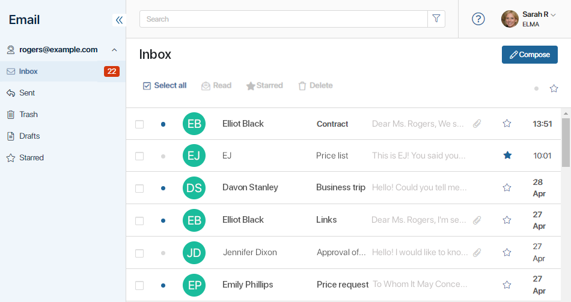

The Email workspace is an email client built into BRIX. Every user can connect their personal email to their account on the platform, and read and send emails to clients and partners right from the BRIX interface. All the communication history will be safely stored in the system.

Advantages of the BRIX email client:
- The BRIX email client is synchronized with your personal email, so you can access all emails you sent or received in the BRIX interface. When you reply to a received email, all subsequent replies are organized in a thread. You can see the whole conversation with a customer on the page of one of the emails in a thread.
- The integration is easily set up for the most popular mailing services: Gmail, Yahoo, and Outlook. You can also use Office365.
- You can connect an email with your own corporate domain via SMTP and IMAP.
- Signature settings are available. You can enter a text that will be added to all of your messages.
- You can quickly start composing a message from the page of an app item that has the Email field added to its form.
- Incoming emails can be automatically sorted by folders you have created.
- Messages are sorted as usual: there are the Inbox, Sent and Drafts folders available. Users can mark emails as Read or Starred, both one by one or in bulk.
- Users can search for emails by key words as well as by other parameters, such as the date sent or the author of the email. In addition, you can sort the emails in folders using filters and display only unread or starred emails..
- All the opened attachments are automatically saved to the Files workspace. All the documents available here can also be attached to an email.
- Messages can be shown on app item pages via the Linked emails widget, for example, in leads or deals. All the users with permission to view items of the app will be able to see the entire conversation history, even if the email address is disconnected from the user profile. The list of apps where emails are displayed is managed by the Administrator.
Read more about working with the Email workspace in the following articles:
- Connect an email to an account
- Configure linking emails with app items
- How the Email workspace is organized
- Email organizing options
- Email page
- Link an app item with an email
- Compose an email
Was this helpful?
Found a typo? Select it and press Ctrl+Enter to send us feedback